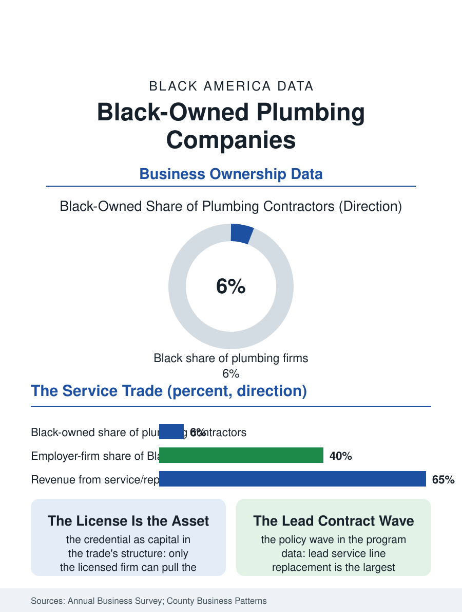

Black Business
The License as Capital: Black-Owned Plumbing Companies
The master's license made ownership the trades career's natural terminus, and the lead-line replacement wave is landing on the Black firm's home ground. The plumbing file.

Plumbing contracting is one of the skilled trades where Black ownership has durable roots: the master plumber's license, the service truck, and the emergency call built businesses that the housing stock's age guarantees work. The business census counts Black-owned plumbing contractors in the thousands, with an employer-firm share above the small-business average for the trades. This article reads the plumbing file.
The License as Capital
The trade's structure rewards the license holder: plumbing's regulation, the master and journeyman tiers enforced by the municipalities, converts the credential into a business asset, since only the licensed firm can pull the permit and sign the work, and the Black plumber's path from the union hall or the family shop to the license made ownership a realistic terminus of the trades career rather than its exception. The community's housing stock wrote the demand: the aging pipes of the older neighborhoods, the galvanized and lead lines of the prewar stock, the sewer laterals of the inner suburbs, generate the service economy on which the Black plumbing firm was built, its vans known on the blocks where its plumbers were raised. The new construction side of the trade divides by the capital line as everywhere in contracting: the service and repair segment, cash-flow rich and relationship driven, is the Black firm's home ground, while the large commercial and multifamily rough-in work runs through the bonding and bidding tiers where the construction file's barriers operate. The apprenticeship pipeline feeds the ownership file directly, since the trade's internal ladder, helper to journeyman to master to owner, is climbable inside a Black firm at every rung, a structure that makes the established shop a training institution whose graduates include its future competitors, in the trade's old and honorable pattern.
Water, Lead, and the Public Contract
The public investment cycle has made the plumbing file a policy file: the lead service line replacement programs funded in the recent infrastructure era constitute the largest plumbing contract wave in a generation, and its geography is precisely the Black firm's home ground, the older cities' water systems, so that the contractor diversity provisions of the water programs are, in practice, plumbing ownership policy. The bidding data show the familiar tension, the large program managers winning the master contracts and the local Black firms fighting for the subcontracting tiers, with the cities that structured the work in neighborhood-scale lots posting the strongest local participation in the program evaluations. The workforce side compounds the opportunity: the licensed plumber shortage is the trades' most acute, the retirement wave outpacing the apprenticeship completions in the labor data, so that the Black firm's growth constraint is its hiring hall rather than its order book, and its training capacity becomes its strategic asset. The technology layer, the trenchless rehabilitation methods, the diagnostic cameras, the water quality testing the lead era demands, reprices the trade upward, the capital equipment separating the growing firm from the one-man shop in a new round of the old consolidation, financed, where it is financed, against the contract backlog the public programs supply.
The Emergency's Economics
The plumbing file closes on the service call's distinctive economics, the most countercyclical in the trades: the burst pipe and the backed-up sewer do not consult the business cycle, and the firm's revenue survived every downturn in the data with a steadiness the construction-dependent trades envy, which is why the plumbing shop anchors so many of the business section's multi-generational stories, the grandfather's license on the wall behind the grandson's dispatch screen. The succession data carry the same steadiness: service businesses with route density and a phone number the neighborhood has dialed for decades are among the most saleable of small firms, and the consolidation wave of private equity roll-ups now buying plumbing platforms in every metro has reached the Black firm's door with offers its owners weigh against the family's third generation, a negotiation the trade press now covers as a genre. The census counts the firms in the thousands and their receipts in the billions. The block counts them in response times: when the basement floods at midnight, the van that comes is the one whose number is on the refrigerator, and in a thousand neighborhoods that number belongs to a firm whose license, whose vans, and whose name are Black, which is what a trade looks like when a people has had a fair century to practice it, and plumbing, alone among the big trades, comes close enough to show the difference.
More in Black Business
Black-Owned Businesses: Counts, Receipts, and the Representation Gap
About 161,000 Black-owned employer firms and three million solo ventures: how the Census Bureau counts Black business ownership, where firms concentrate, and the gap between population share and business share.
Black Median Net Worth: The Wealth Gap in Federal Reserve Data
The Federal Reserve puts Black median family net worth at $44,900, against $285,000 for White families — about 16 cents on the dollar. The widest gap in economic data.
Black Buying Power: The $1.8 Trillion Consumer Economy
Black buying power is estimated at about $1.8 trillion — larger than the economy of most nations. What the figure measures, who produces it, and what it buys.
Source: U.S. Census Bureau, Annual Business Survey and County Business Patterns for plumbing contractors; water infrastructure program data.